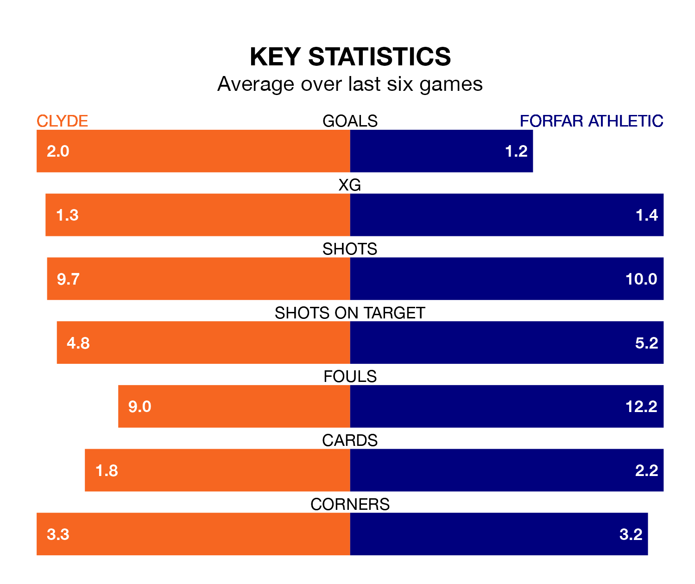

Struggling Clyde face Forfar Athletic at the Fountain of Youth Stadium on Saturday looking to build on a win in their last league outing.
After securing all three points with a 1-1 victory over East Fife on January 13, the Bully Wee sit bottom of League Two.
They travel to play a Forfar side eighth in the standings, who also won their last match, 2-1 against Elgin City.
With Marc McCallum between the sticks, Forfar can rely on one of the league's safest pair of hands. He has kept six clean sheets in his 20 appearances this season, and only one other 'keeper – Stenhousemuir's Darren Jamieson – has been able to prevent the opposition scoring on more occasions in League Two.
In Clyde's net, Jack Leighfield has one clean sheet in 17 games. He has conceded a goal every 46 minutes, 50% more often than the 69 minutes between goals for McCallum.
In the last 10 years, Clyde and Forfar have played each other on 12 occasions. Clyde won two of them, Forfar five, and they drew five times.
On average, the Bully Wee scored 1.2 goals and the Loons 1.3 in those matches.
Their last meeting was on November 11, when they played out a 1-1 draw.
The Bully Wee are in disappointing form in League Two, with one win and three draws from their last six games.
With two wins and a draw over that period, Athletic's form is slightly better – they have taken seven points from 18, compared to the home team's six.
With 20 goals in 20 games so far this season, the Loons are the league's second-lowest scorers with 1.0 goals per game. But they are conceding fewer than average too, letting in 26 goals at a rate of 1.3 per game.
Clyde are also below average scorers, with 1.2 goals per game, compared to a league average of 1.4. They have conceded 2.0 goals per game.
Updated: 14:53 (UTC), 16/01/24